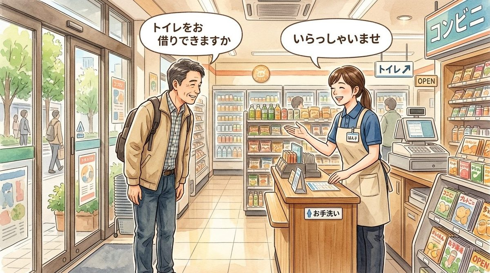

Convenience Store Services
Convenience stores (konbini) such as 7-Eleven, Lawson, and FamilyMart are open almost all day. You can buy food and daily goods, pay bills, send packages, print documents, and use the ATM.
Tip: Staff will ask “Atatamemasu ka?” (Shall I heat it?). Answer “Hai” (yes) or “Daijoubu desu” (no, thank you).